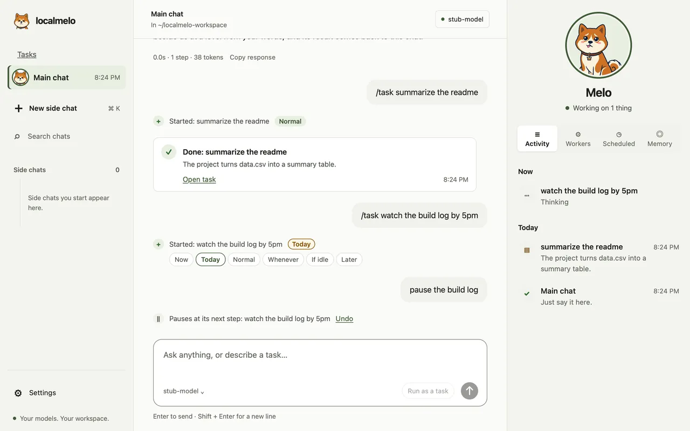
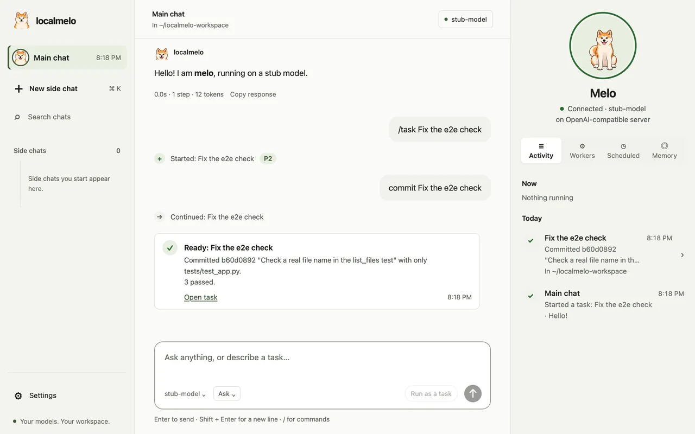
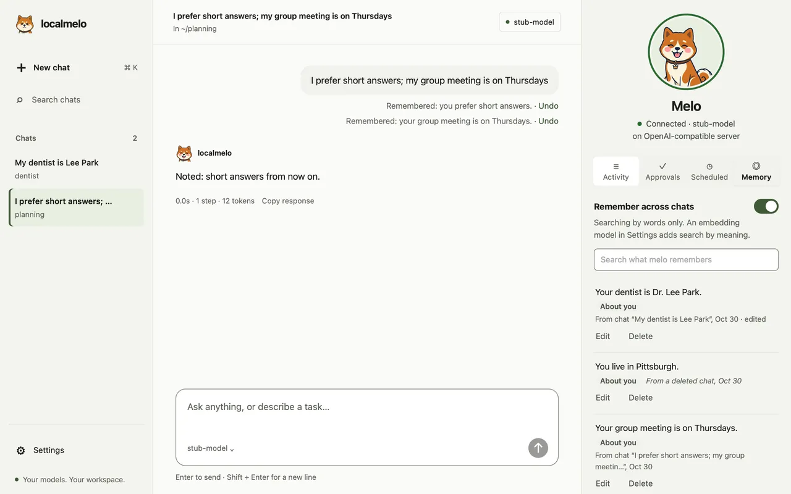
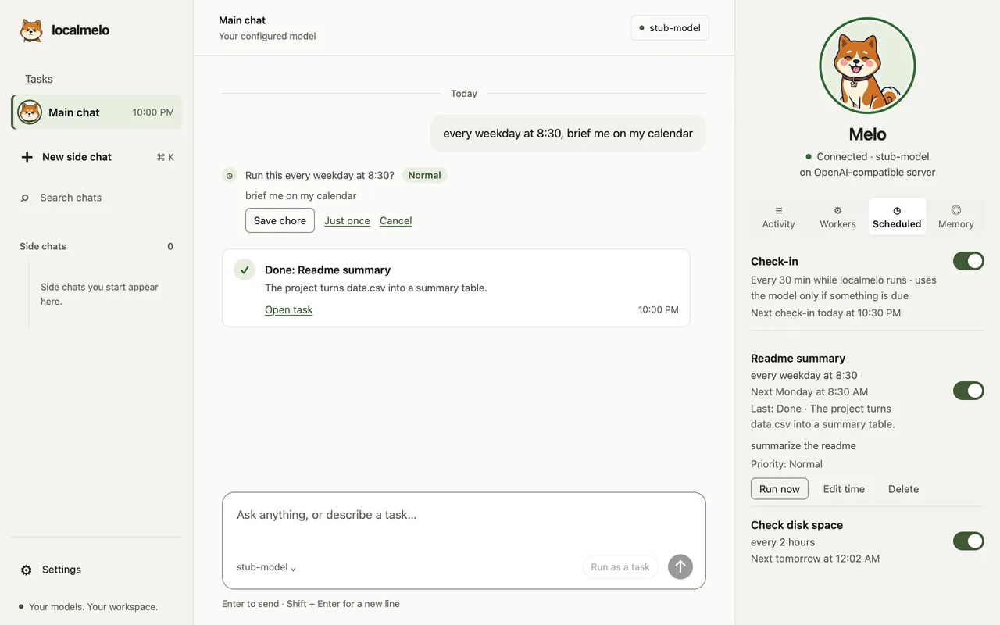
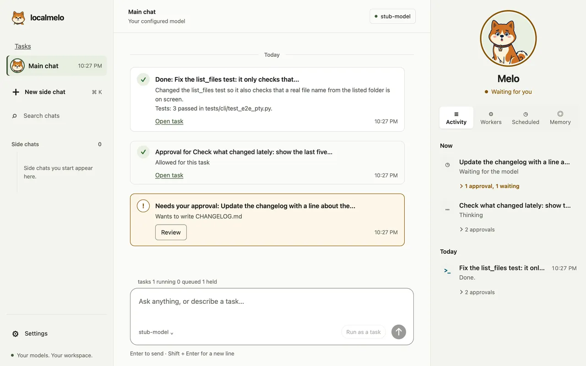
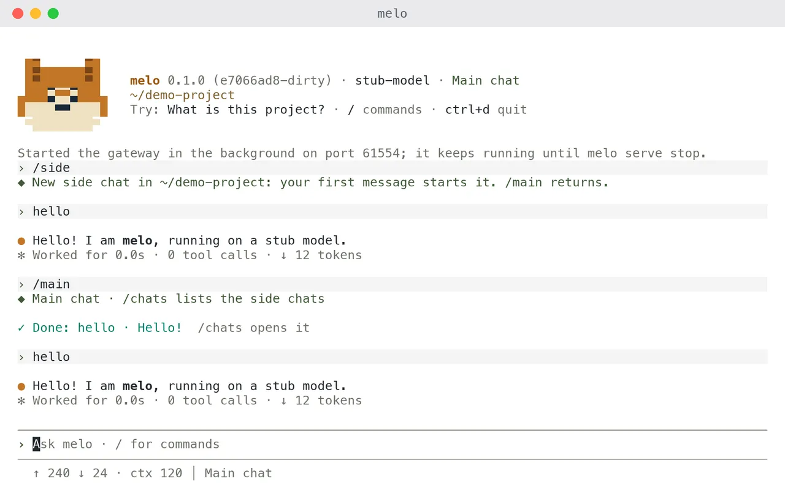
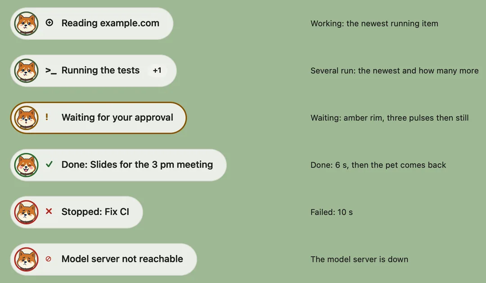
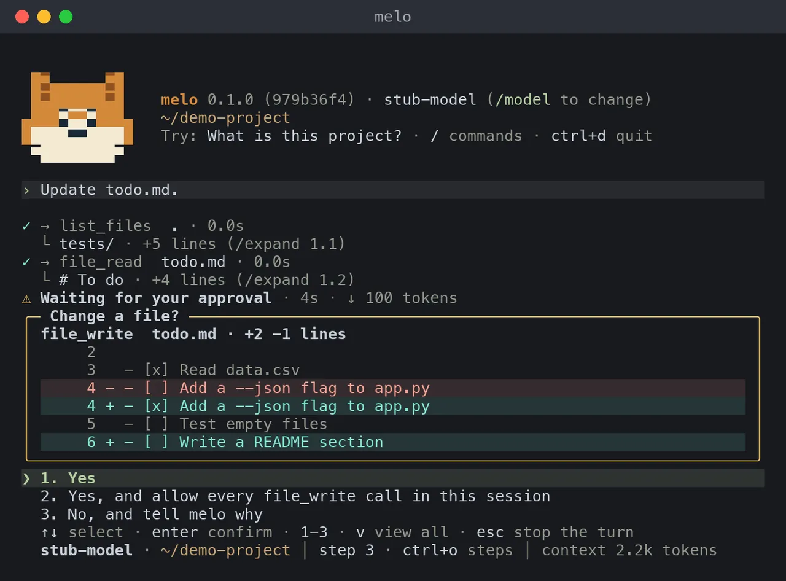
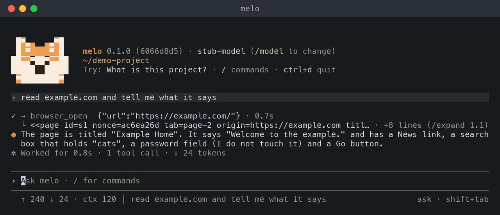

localmelo
A personal agent that runs on your own computer. It works with tools, remembers across chats and talks to your own model server or a cloud API.


melo serve opens in your browser: the main chat, and Melo's panel beside it.Quick start
You need Python 3.11 or later, Git and uv on macOS (Linux should work; Windows is not supported).
git clone https://github.com/localmelo/localmelo.git
cd localmelo
uv sync --extra gateway
source .venv/bin/activatemelo -u http://127.0.0.1:8000/v1 -m Qwen3-8B-4bit "What is 6*7?"melo -u http://127.0.0.1:11434/v1 -m qwen3:8b "What is 6*7?"- Keep the folder name
localmelo: the package is built from it. - On a Mac with Apple silicon, oMLX is the recommended model server; elsewhere, Ollama.
-uand-mare short for--urland--model; the answer prints on stdout.- On a Mac with Apple silicon you can also build the app:
uv run python scripts/build_macos_app.py --install.
What you can do

One main chat, with side chatsAsk, or ask for work: bigger work becomes a task by priority and comes back as a card.
Memory you can seemelo remembers across chats, and the newer fact wins. You can read, edit or forget each note.
Chores that run on timeSay it once, likeevery weekday at 8:30, brief me on my calendar. A check-in tells you what finished.

Tasks that say what happenedA finished task's card says what changed and the commit; a task works only in its chat's folder.
The terminal joins the same chatTypemelo for the main chat the app shows, and /side for a side chat.

A pill that shows what runsWith the window put away, a small pill on your Mac says what melo is doing.
Approve what mattersmelo asks before it runs a command or changes a file, and shows the change.
Read the webTurn browsing on and melo reads pages in Safari windows you can watch.Also: model servers, the HTTP API, worker runs, the Python API and scripts.
Roadmap
The first release, v0.1.0, is due 2026-12-20.
Now 4
- Plain words on the task pageA task's page says what happened in words, without labels from inside melo.building
- Worker runs that finish the jobRuns act early, check their own work and say why they stopped.testing
- A first run without docsConnect a model and answer melo's questions without reading anything.testing
- Fewer tokens on local serversMore prompt-cache hits and shorter replies on your own model server.testing
Next 7
- Dogfood round 2 on the new buildReal work on this repository through the main chat, to find and fix what still trips people up.
- Computer use in the browsermelo acts on pages in a window you can watch, and asks before anything that matters.
- Art for Melo's working posesThe pill and the pet get drawn poses for the moments when melo works.
- Set up a model server from meloWith nothing installed, reach a first answer with one confirmation.
- Other agents hand work to meloWorkers on the task API, and an MCP server for coding agents.
- Workers that share a projectParallel workers share one cached start; each task stays separate.
- melo helps build meloReal development tasks on a hosted model, graded against other workers.
Later 5
- Deadlines for tasksBackground tasks with deadlines and an account of each worker's time.
- Learning while idlemelo reviews past work offline and keeps only what helps.
- Self-improvementmelo tries fixes on itself and keeps the better one, with a way back.
- Safe for daily useA safety and privacy baseline before everyday personal use.
- Release v0.1.0Tests on every change, the changelog and a tagged release by 2026-12-20.
Done 8
- Main chat and side chatsOne chat that answers, or hands bigger work to a task by priority; the terminal opens the same chat.done
- Memory you can seeNotes across chats, the newer value wins, and a Memory tab to edit or forget.done
- Chores that run on timeSay it once; a check-in tells you what finished or waits.done
- Cards that say what happenedA finished task's card says what changed, which tests ran and the commit.done
- Folders that follow the chatA task works in its chat's folder, never silently in another, and workers ask less.done
- Browsing the webmelo reads and follows pages in a window you can watch.done
- Melo the Akita and the pillA pet in the app, the console and on your desktop, and a pill that says what runs.done
- Calls that matter askInstalling, downloading and changes outside the folder always ask, with the reason.done
What's new and what changed.
Security
Tools run with your account's permissions, and there is no sandbox.
- The model can run shell commands and Python, and read or write any file you can.
- On macOS, a worker run (
melo worker) and a saved task can write only in their workspace. - New memory files are readable only by you (mode 0600).
- The gateway requires a bearer token or browser session and refuses non-loopback binds;
melo consoleprints a one-use link. - A token holder can act as you; same-user processes are not isolated, and browser cookies are not isolated by localhost port.
Read the security policy and what the checks do.